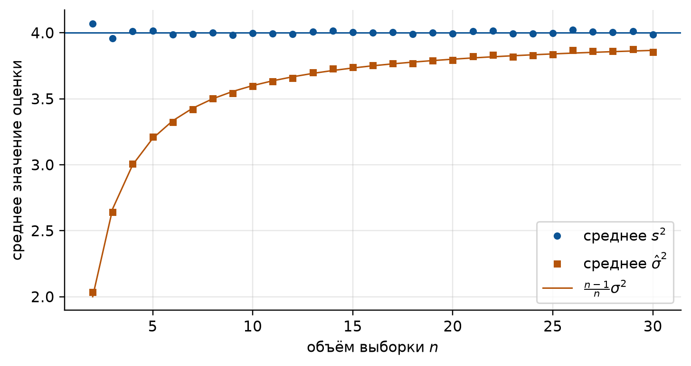
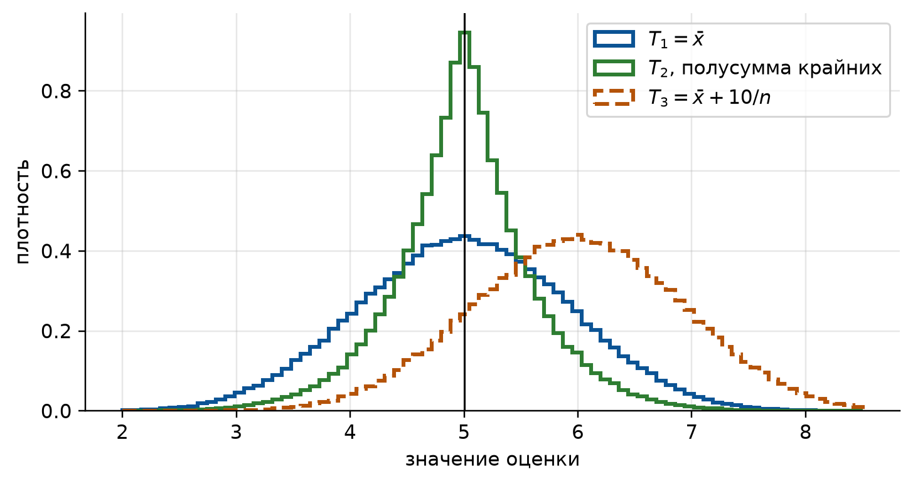
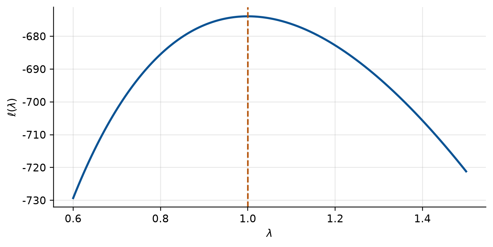
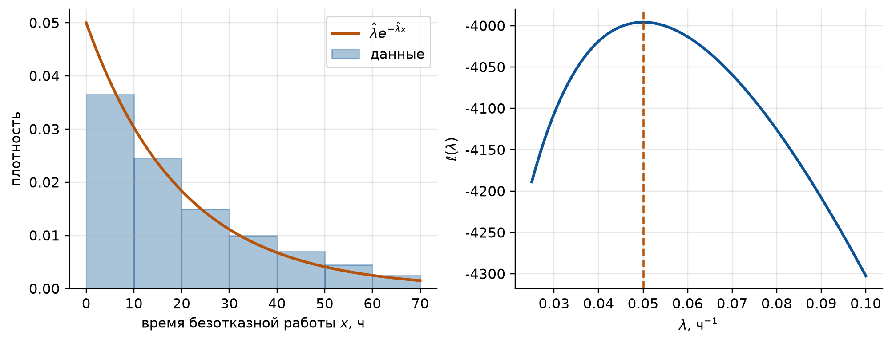
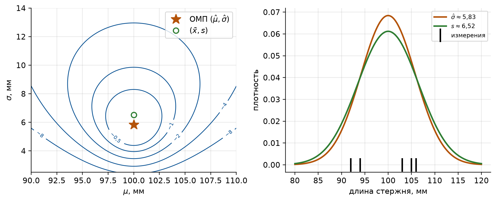
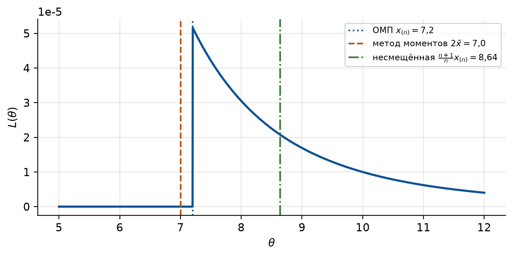

import numpy as np
import matplotlib.pyplot as plt
from math import sqrt
from scipy.special import gammaln
# Оформление графиков: шрифт с кириллицей и палитра, различимая при печати
PALETTE = ["#0b5394", "#b45309", "#2e7d32", "#7b1fa2", "#c62828", "#00838f"]
plt.rcParams.update({
"font.family": "sans-serif",
"font.sans-serif": ["DejaVu Sans", "Liberation Sans", "Noto Sans", "sans-serif"],
"axes.unicode_minus": False,
"axes.prop_cycle": plt.cycler(color=PALETTE),
"axes.spines.top": False,
"axes.spines.right": False,
"axes.grid": True,
"grid.alpha": 0.3,
"figure.dpi": 110,
"figure.constrained_layout.use": True,
})
# Генератор случайных чисел с фиксированным зерном: результаты воспроизводимы
rng = np.random.default_rng(2026)
def compare(name, a, b, labels=("формула", "расчёт")):
"""Печатает два значения одной величины рядом, с подписями labels."""
print(f"{name:>20}: {labels[0]} {a:10.4f} {labels[1]} {b:10.4f}")
def grouped_stats(values, counts):
"""Среднее, дисперсия с делителем n и s^2 с делителем n - 1 по статистическому ряду.
values: варианты x_i, counts: частоты n_i.
"""
values, counts = np.asarray(values, dtype=float), np.asarray(counts)
n = counts.sum()
mean = (values * counts).sum() / n
var = ((values - mean) ** 2 * counts).sum() / n
return mean, var, var * n / (n - 1)
def midrange(samples):
"""Полусумма наименьшего и наибольшего элементов в каждой строке массива выборок."""
return (samples.min(axis=1) + samples.max(axis=1)) / 2
def poisson_loglik(lam, values, counts):
"""Логарифм правдоподобия закона Пуассона по статистическому ряду; lam может быть массивом."""
lam = np.asarray(lam, dtype=float)[..., None]
return (counts * (values * np.log(lam) - lam - gammaln(values + 1))).sum(axis=-1)
def exp_loglik(lam, values, counts):
"""Логарифм правдоподобия показательного закона по статистическому ряду; lam может быть массивом."""
lam = np.asarray(lam, dtype=float)[..., None]
return (counts * (np.log(lam) - lam * values)).sum(axis=-1)
def normal_loglik(mu, sigma, x):
"""Логарифм правдоподобия N(mu, sigma^2) по выборке x; mu и sigma могут быть сетками одной формы."""
mu = np.asarray(mu, dtype=float)[..., None]
sigma = np.asarray(sigma, dtype=float)[..., None]
return (-np.log(sigma) - 0.5 * np.log(2 * np.pi) - (x - mu) ** 2 / (2 * sigma**2)).sum(axis=-1)
def uniform_lik(theta, x):
"""Правдоподобие равномерного закона на [0, theta]: theta^(-n) при theta >= max x_i, иначе 0."""
theta = np.asarray(theta, dtype=float)
return np.where(theta >= np.max(x), theta ** (-float(len(x))), 0.0)8 Семинар 9. Точечные оценки. Метод наибольшего правдоподобия и метод моментов
Теория вероятностей и математическая статистика · НИЯУ МИФИ
Скачать PDF-раздатку этого семинара
8.1 Код для этой главы
Все импорты и функции, которые используются в примерах главы, собраны в одной ячейке. Выполните её первой: остальные ячейки опираются на неё.
8.2 Краткая сводка
На семинаре 8 выборку описывали числами: \(\bar x\), \(\hat\sigma^2\), \(s^2\). Теперь вопрос обратный: закон наблюдений известен с точностью до параметра (Пуассон с неизвестным \(\lambda\), нормальный с неизвестными \(\mu\) и \(\sigma\)), и параметр надо найти по выборке. Число, которое для этого считают, называют оценкой. Оценок одного параметра можно придумать много; нужно уметь их сравнивать (свойства оценок) и строить (два метода).
Уведомление
Обозначения. В главе используются стандартные обозначения. У лектора и в задачнике то же самое записано иначе:
| Здесь | Лекция | Гмурман |
|---|---|---|
| параметр \(\theta\), оценка \(\hat\theta\) | \(\theta\), \(\theta^*\) | \(\Theta\), \(\Theta^*\) |
| \(\mu = \E X\), \(\sigma^2 = \Var X\) | \(\bar x_{\text{г}} = M[X] = m_x\), \(D_{\text{г}} = D_x\) | \(M(X)\), \(D(X)\), \(D_{\text{г}}\) |
| \(\bar x\) | \(\bar x_{\text{в}}\) | \(\bar x_{\text{в}}\) |
| \(\hat\sigma^2 = \frac1n\sum (x_i - \bar x)^2\) | \(D_{\text{в}}\) | \(D_{\text{в}}\) |
| \(s^2 = \frac{1}{n-1}\sum (x_i - \bar x)^2\) | \(s^2\) | \(s^2\) |
| \(x_{(1)}\), \(x_{(n)}\) (наименьший и наибольший элементы) | \(x_{\min}\), \(x_{\max}\) | |
| моменты закона \(\E X^k\), \(\Var X\) | \(\int x^l f(x, \theta)\,dx\) | \(\nu_k\), \(\mu_2\) |
| моменты выборки \(\overline{x^k} = \frac1n\sum x_i^k\), \(\hat\sigma^2\) | \(\frac1n\sum x_i^l\), \(D_{\text{в}}\) | \(M_k\), \(m_2\) |
| \(N(\mu, \sigma^2)\) | \(m_x\), \(\sigma_x^2\) | \(a\), \(\sigma\) |
| правдоподобие \(L(\theta)\), \(\ell(\theta) = \ln L(\theta)\) | \(L(x_1, \dots, x_n, \theta)\), \(\ln L\) | \(L(x_1, \dots, x_n; \Theta)\), \(\ln L\) |
| гамма-закон: форма \(k\), масштаб \(\beta\) | \(\alpha = k - 1\), \(\beta\) |
8.2.1 Оценка и её свойства
Наблюдения \(X_1, \dots, X_n\) независимы и распределены как \(X\), закон \(X\) зависит от неизвестного параметра \(\theta\). Оценка \(\hat\theta = \hat\theta(X_1, \dots, X_n)\) есть любая функция выборки, то есть формула. По данным она даёт число, но до опыта это случайная величина: другая выборка даст другое значение. Поэтому у оценки есть свой закон, среднее и дисперсия, и сравнивают оценки по ним.
- Несмещённость: \(\E\hat\theta = \theta\) при любом \(\theta\) и любом \(n\). Разность \(b = \E\hat\theta - \theta\) называют смещением: это систематическая ошибка оценки. Если \(b \to 0\) при \(n \to \infty\), оценка асимптотически несмещённая.
- Состоятельность: \(\hat\theta \to \theta\) по вероятности, то есть \(\Prob(|\hat\theta - \theta| \geqslant \varepsilon) \to 0\) при \(n \to \infty\) для любого \(\varepsilon > 0\). Достаточное условие следует из неравенства Чебышева: \(\E\hat\theta \to \theta\) и \(\Var\hat\theta \to 0\).
- Эффективность: из двух несмещённых оценок лучше та, у которой дисперсия меньше. Эффективная оценка имеет наименьшую дисперсию среди несмещённых при данном \(n\).
Состоятельность говорит о больших \(n\), несмещённость и эффективность о данном \(n\). Требуют обычно всех трёх.
Среднее и дисперсия выборки (вывод в задаче 2): \[ \E\bar X = \mu, \quad \Var\bar X = \frac{\sigma^2}{n}; \qquad \E\hat\sigma^2 = \frac{n - 1}{n}\,\sigma^2, \quad \E s^2 = \sigma^2. \] Выборочное среднее несмещённо и состоятельно; \(\hat\sigma^2\) смещена (занижает дисперсию), \(s^2\) несмещена. Отсюда делитель \(n - 1\).
8.2.2 Метод наибольшего правдоподобия
Выборка \(x_1, \dots, x_n\) уже получена. Функция правдоподобия есть вероятность (для непрерывного закона плотность) получить именно эту выборку, как функция параметра: \[ L(\theta) = \prod_{i=1}^{n} p(x_i; \theta) \ \text{(дискретный закон)}, \qquad L(\theta) = \prod_{i=1}^{n} f(x_i; \theta) \ \text{(непрерывный)}. \] Оценка наибольшего правдоподобия (ОМП) есть значение \(\hat\theta\), при котором \(L\) максимальна: параметр подбирают так, чтобы наблюдённая выборка была самой правдоподобной.
- Логарифм возрастает, поэтому максимум \(L\) и максимум \(\ell(\theta) = \ln L(\theta) = \sum \ln f(x_i; \theta)\) достигаются в одной точке, а произведение превращается в сумму.
- Рецепт: решить уравнение правдоподобия \(\ell'(\theta) = 0\) и проверить, что \(\ell''(\hat\theta) < 0\). Для двух параметров решают систему \(\partial\ell/\partial\theta_1 = 0\), \(\partial\ell/\partial\theta_2 = 0\).
- Если варианта \(x_i\) встретилась \(n_i\) раз, то \(\ell(\theta) = \sum n_i \ln f(x_i; \theta)\).
- Рецепт работает, когда максимум внутри области и \(\ell\) гладкая. Если от \(\theta\) зависят границы, где \(f > 0\), максимум может быть на краю, и производная там нулю не равна; тогда смотрят на сам график \(L\) (задача 10).
8.2.3 Метод моментов
Если неизвестных параметров \(r\), моменты закона (функции параметров) приравнивают к моментам выборки: \[ \E X^k = \overline{x^k} = \frac1n\sum_{i=1}^{n} x_i^k, \qquad k = 1, \dots, r, \] и решают систему относительно параметров. Для двух параметров удобнее равносильная пара \(\E X = \bar x\), \(\Var X = \hat\sigma^2\).
Оценки метода моментов находятся просто и выписываются явно, но бывают менее эффективны, чем ОМП, а иногда противоречат самим данным (задача 10). Их часто берут как начальное приближение.
Справка: моменты законов из задач.
| Закон | \(\E X\) | \(\Var X\) |
|---|---|---|
| Пуассона, \(\Prob(X = k) = \frac{\lambda^k}{k!}e^{-\lambda}\) | \(\lambda\) | \(\lambda\) |
| биномиальный, \(\Prob(X = k) = C_m^k p^k (1 - p)^{m-k}\) | \(mp\) | \(mp(1 - p)\) |
| геометрический, \(\Prob(X = k) = (1 - p)^{k-1}p\), \(k = 1, 2, \dots\) | \(1/p\) | \((1 - p)/p^2\) |
| показательный, \(f(x) = \lambda e^{-\lambda x}\), \(x \geqslant 0\) | \(1/\lambda\) | \(1/\lambda^2\) |
| равномерный на \([a, b]\) | \((a + b)/2\) | \((b - a)^2/12\) |
| нормальный \(N(\mu, \sigma^2)\) | \(\mu\) | \(\sigma^2\) |
| гамма, \(f(x) = \dfrac{x^{k-1}e^{-x/\beta}}{\Gamma(k)\beta^k}\), \(x > 0\) | \(k\beta\) | \(k\beta^2\) |
8.3 Блок A. Свойства оценок
8.3.1 Задача 1 (Гмурман, гл. 10 § 1, № 456)
По выборке объёма \(n = 51\) найдена смещённая оценка генеральной дисперсии \(\hat\sigma^2 = 5\). Найти несмещённую оценку дисперсии генеральной совокупности.
СоветРешение
Несмещённая оценка есть исправленная дисперсия: \[ s^2 = \frac{n}{n - 1}\,\hat\sigma^2 = \frac{51}{50}\cdot 5 = 5{,}1. \] При \(n = 51\) поправка всего 2 %; при \(n = 5\) она была бы 25 %. Для больших выборок разница между \(\hat\sigma^2\) и \(s^2\) несущественна, для малых заметна.
8.3.2 Задача 2
Наблюдения \(X_1, \dots, X_n\) независимы и распределены как \(X\), \(\E X = \mu\), \(\Var X = \sigma^2\).
а) Доказать, что \(\bar X\) есть несмещённая и состоятельная оценка \(\mu\).
б) Доказать, что \(\E\hat\sigma^2 = \frac{n - 1}{n}\,\sigma^2\), и вывести отсюда, что \(s^2\) есть несмещённая оценка \(\sigma^2\). Какие из двух оценок асимптотически несмещённые?
в) Является ли \(s = \sqrt{s^2}\) несмещённой оценкой \(\sigma\)?
Указание к б): сначала проверить тождество \(\sum (X_i - \bar X)^2 = \sum (X_i - \mu)^2 - n(\bar X - \mu)^2\).
СоветРешение
а) \(\E\bar X = \frac1n\sum\E X_i = \frac1n\cdot n\mu = \mu\): несмещённая. По независимости \(\Var\bar X = \frac{1}{n^2}\cdot n\sigma^2 = \frac{\sigma^2}{n}\), и по неравенству Чебышева \(\Prob(|\bar X - \mu| \geqslant \varepsilon) \leqslant \frac{\sigma^2}{n\varepsilon^2} \to 0\): состоятельная (это закон больших чисел).
б) Запишем \(X_i - \bar X = (X_i - \mu) - (\bar X - \mu)\) и возведём в квадрат: \[ \sum (X_i - \bar X)^2 = \sum (X_i - \mu)^2 - 2(\bar X - \mu)\sum (X_i - \mu) + n(\bar X - \mu)^2. \] Так как \(\sum (X_i - \mu) = n(\bar X - \mu)\), средний член равен \(-2n(\bar X - \mu)^2\), и получаем тождество из указания. Берём среднее: \(\E(X_i - \mu)^2 = \sigma^2\), \(\E(\bar X - \mu)^2 = \Var\bar X = \sigma^2/n\), поэтому \[ \E\sum (X_i - \bar X)^2 = n\sigma^2 - n\cdot\frac{\sigma^2}{n} = (n - 1)\sigma^2. \] Делим на \(n\) и на \(n - 1\): \[ \E\hat\sigma^2 = \frac{n - 1}{n}\,\sigma^2 < \sigma^2, \qquad \E s^2 = \sigma^2. \] Смещение \(\hat\sigma^2\) равно \(-\sigma^2/n\) и стремится к нулю: обе оценки асимптотически несмещённые, но несмещённая только \(s^2\).
Смысл: отклонения отсчитываются от \(\bar X\), а \(\bar X\) подстроено под эти же данные, поэтому отклонения от него в среднем меньше, чем от истинного \(\mu\). Одно наблюдение «потрачено» на оценку \(\mu\).
в) Нет. \(\Var s = \E s^2 - (\E s)^2 > 0\) (если \(s\) не постоянна), отсюда \((\E s)^2 < \E s^2 = \sigma^2\) и \(\E s < \sigma\): \(s\) занижает \(\sigma\). Несмещённость не переживает нелинейных преобразований: из \(\E s^2 = \sigma^2\) не следует \(\E s = \sigma\). На практике \(s\) всё равно используют, при больших \(n\) смещение мало.
Проверка: 200 000 выборок объёма \(n = 5\) из \(N(10, 2^2)\); средние значения \(\hat\sigma^2\), \(s^2\) и \(s\) по всем выборкам против \(\frac45\cdot 4 = 3{,}2\), \(4\) и \(2\).
samples = rng.normal(10, 2, size=(200_000, 5))
compare("E sigma^2 (1/n)", 4 * 4 / 5, samples.var(axis=1).mean(), ("теория", "симуляция"))
compare("E s^2 (1/(n-1))", 4, samples.var(axis=1, ddof=1).mean(), ("теория", "симуляция"))
compare("E s (sigma = 2)", 2, samples.std(axis=1, ddof=1).mean(), ("sigma", "симуляция")) E sigma^2 (1/n): теория 3.2000 симуляция 3.2027
E s^2 (1/(n-1)): теория 4.0000 симуляция 4.0034
E s (sigma = 2): sigma 2.0000 симуляция 1.8806sizes = np.arange(2, 31)
mean_biased, mean_s2 = [], []
for n_obs in sizes:
batch = rng.normal(10, 2, size=(20_000, n_obs))
mean_biased.append(batch.var(axis=1).mean())
mean_s2.append(batch.var(axis=1, ddof=1).mean())
fig, ax = plt.subplots(figsize=(6.5, 3.4))
ax.plot(sizes, mean_s2, "o", ms=4, color=PALETTE[0], label="среднее $s^2$")
ax.plot(sizes, mean_biased, "s", ms=4, color=PALETTE[1], label="среднее $\\hat\\sigma^2$")
ax.plot(sizes, 4 * (sizes - 1) / sizes, color=PALETTE[1], lw=1, label="$\\frac{n-1}{n}\\sigma^2$")
ax.axhline(4, color=PALETTE[0], lw=1)
ax.set_xlabel("объём выборки $n$")
ax.set_ylabel("среднее значение оценки")
ax.legend()
plt.show()
ПредупреждениеТипичная ошибка
Делить на \(n - 1\) всегда. Если \(\mu\) известно и отклонения считают от него, то \(\frac1n\sum (X_i - \mu)^2\) уже несмещённая: в выводе нет члена \(n(\bar X - \mu)^2\). Поправка \(n - 1\) нужна только тогда, когда \(\mu\) заменено на \(\bar X\).
8.3.3 Задача 3
Время ожидания автобуса \(X\) равномерно распределено на \([0, \theta]\), \(\theta\) неизвестно. По выборке объёма \(n\) оценивают среднее время ожидания \(\mu = \theta/2\). Предложены три оценки: \[ T_1 = \bar x, \qquad T_2 = \frac{x_{(1)} + x_{(n)}}{2}, \qquad T_3 = \bar x + \frac{10}{n}. \] Для равномерного закона известно: \(\E x_{(1)} = \frac{\theta}{n + 1}\), \(\E x_{(n)} = \frac{n\theta}{n + 1}\), \(\Var T_2 = \frac{\theta^2}{2(n + 1)(n + 2)}\).
а) Какие из оценок несмещённые? б) Какие состоятельные? в) Сравнить дисперсии \(T_1\) и \(T_2\) при \(n = 10\). Какая оценка эффективнее?
СоветРешение
а) \(\E T_1 = \mu\) (задача 2). \(\E T_2 = \frac12\big(\frac{\theta}{n+1} + \frac{n\theta}{n+1}\big) = \frac\theta2 = \mu\). \(\E T_3 = \mu + \frac{10}{n}\): смещение \(10/n\). Несмещённые \(T_1\) и \(T_2\).
б) Все три. У \(T_1\) и \(T_2\) дисперсии \(\frac{\theta^2}{12n}\) и \(\frac{\theta^2}{2(n+1)(n+2)}\) стремятся к нулю. У \(T_3\) дисперсия та же, что у \(T_1\), а смещение \(10/n \to 0\). Пример \(T_3\) показывает, что одной состоятельности мало: при малых \(n\) оценка систематически завышает.
в) При \(n = 10\): \[ \Var T_1 = \frac{\theta^2}{120}, \qquad \Var T_2 = \frac{\theta^2}{264}. \] \(T_2\) в 2,2 раза точнее. Для равномерного закона самые информативные наблюдения крайние: они ближе всего к границам \(0\) и \(\theta\). Отношение дисперсий \(\frac{(n+1)(n+2)}{6n}\) растёт с \(n\).
Для нормального закона всё наоборот: там \(\bar x\) эффективна (это было на лекции), а полусумма крайних хуже, крайние наблюдения там самые случайные. Какая оценка лучше, зависит от закона наблюдений.
Если смещённую \(T_3\) тоже хочется сравнить, берут средний квадрат ошибки \(\E(T - \mu)^2 = \Var T + b^2\): смещение добавляет \(b^2 = 1\) при \(n = 10\).
Проверка: 200 000 выборок объёма 10 из равномерного закона на \([0, 10]\) (\(\mu = 5\)), средние и дисперсии трёх оценок; затем те же \(T_1\) и \(T_2\) для выборок из \(N(5, 1)\).
theta, n_obs = 10, 10
unif = rng.uniform(0, theta, size=(200_000, n_obs))
t1, t2 = unif.mean(axis=1), midrange(unif)
t3 = t1 + 10 / n_obs
for name, t in [("T1", t1), ("T2", t2), ("T3", t3)]:
print(f"{name}: среднее {t.mean():.4f}, дисперсия {t.var():.4f}")
compare("Var T1", theta**2 / 120, t1.var(), ("теория", "симуляция"))
compare("Var T2", theta**2 / 264, t2.var(), ("теория", "симуляция"))
norm_samples = rng.normal(5, 1, size=(200_000, n_obs))
compare("нормальный закон", norm_samples.mean(axis=1).var(), midrange(norm_samples).var(), ("Var T1", "Var T2"))T1: среднее 5.0026, дисперсия 0.8395
T2: среднее 5.0026, дисперсия 0.3802
T3: среднее 6.0026, дисперсия 0.8395
Var T1: теория 0.8333 симуляция 0.8395
Var T2: теория 0.3788 симуляция 0.3802
нормальный закон: Var T1 0.0999 Var T2 0.1852fig, ax = plt.subplots(figsize=(6.5, 3.4))
bins = np.linspace(2, 8.5, 80)
ax.hist(t1, bins=bins, density=True, histtype="step", lw=2, color=PALETTE[0], label="$T_1 = \\bar x$")
ax.hist(t2, bins=bins, density=True, histtype="step", lw=2, color=PALETTE[2], label="$T_2$, полусумма крайних")
ax.hist(t3, bins=bins, density=True, histtype="step", lw=2, ls="--", color=PALETTE[1], label="$T_3 = \\bar x + 10/n$")
ax.axvline(5, color="black", lw=1)
ax.set_xlabel("значение оценки")
ax.set_ylabel("плотность")
ax.legend()
plt.show()
8.4 Блок B. Метод наибольшего правдоподобия
8.4.1 Задача 4 (Гмурман, гл. 10 § 3, № 491, 492)
Случайная величина \(X\) (число повреждённых стеклянных изделий в одном контейнере) распределена по закону Пуассона с неизвестным параметром \(\lambda\).
а) Найти методом наибольшего правдоподобия оценку \(\lambda\) по выборке \(x_1, \dots, x_n\).
б) Ниже приведено распределение числа повреждённых изделий в 500 контейнерах (\(x_i\): количество повреждённых изделий в одном контейнере, \(n_i\): число контейнеров):
| \(x_i\) | 0 | 1 | 2 | 3 | 4 | 5 | 6 | 7 |
|---|---|---|---|---|---|---|---|---|
| \(n_i\) | 199 | 169 | 87 | 31 | 9 | 3 | 1 | 1 |
Найти оценку \(\lambda\).
СоветРешение
а) \(p(x; \lambda) = \frac{\lambda^x}{x!}e^{-\lambda}\), поэтому \[ L(\lambda) = \prod_{i=1}^{n}\frac{\lambda^{x_i}}{x_i!}e^{-\lambda} = \frac{\lambda^{\sum x_i}e^{-n\lambda}}{x_1!\cdots x_n!}, \qquad \ell(\lambda) = \Big(\sum x_i\Big)\ln\lambda - n\lambda - \sum\ln x_i!. \] Уравнение правдоподобия: \[ \ell'(\lambda) = \frac{\sum x_i}{\lambda} - n = 0 \quad\Longrightarrow\quad \hat\lambda = \frac{\sum x_i}{n} = \bar x. \] \(\ell''(\lambda) = -\frac{\sum x_i}{\lambda^2} < 0\): это максимум. Последнее слагаемое \(\ell\) от \(\lambda\) не зависит и в уравнение не входит.
б) \(\sum n_i = 500\), \(\sum n_ix_i = 169 + 174 + 93 + 36 + 15 + 6 + 7 = 500\), \(\hat\lambda = \bar x = 1\).
Оценка разумна: при \(\lambda = 1\) ожидаемое число контейнеров с \(k\) повреждёнными изделиями \(500\cdot\frac{e^{-1}}{k!}\) равно 183,9; 183,9; 92,0; 30,7; 7,7; 1,5; …, а наблюдалось 199, 169, 87, 31, 9, 3, … Как формально проверить такое согласие, разберём позже (критерии согласия).
Проверка: максимум \(\ell(\lambda)\) на сетке и ожидаемые частоты.
x4 = np.arange(8)
n4 = np.array([199, 169, 87, 31, 9, 3, 1, 1])
lam_hat = (x4 * n4).sum() / n4.sum()
grid = np.linspace(0.5, 1.5, 10_001)
compare("lambda", lam_hat, grid[np.argmax(poisson_loglik(grid, x4, n4))], ("x̄", "максимум"))
expected = n4.sum() * np.exp(x4 * np.log(lam_hat) - lam_hat - gammaln(x4 + 1))
print("ожидаемые: ", np.round(expected, 1))
print("наблюдённые:", n4) lambda: x̄ 1.0000 максимум 1.0000
ожидаемые: [183.9 183.9 92. 30.7 7.7 1.5 0.3 0. ]
наблюдённые: [199 169 87 31 9 3 1 1]fig, ax = plt.subplots(figsize=(6.5, 3.2))
lam_plot = np.linspace(0.6, 1.5, 300)
ax.plot(lam_plot, poisson_loglik(lam_plot, x4, n4), color=PALETTE[0], lw=2)
ax.axvline(lam_hat, color=PALETTE[1], ls="--", lw=1.5)
ax.set_xlabel("$\\lambda$")
ax.set_ylabel("$\\ell(\\lambda)$")
plt.show()
8.4.2 Задача 5 (Гмурман, гл. 10 § 3, № 493, 494)
Случайная величина \(X\) (время безотказной работы элемента) имеет показательное распределение \(f(x) = \lambda e^{-\lambda x}\) (\(x \geqslant 0\)).
а) Найти методом наибольшего правдоподобия оценку \(\lambda\) по выборке \(x_1, \dots, x_n\).
б) Ниже приведено распределение среднего времени работы 1000 элементов (\(x_i\): среднее время безотказной работы элемента, ч; \(n_i\): количество элементов, проработавших в среднем \(x_i\) часов):
| \(x_i\) | 5 | 15 | 25 | 35 | 45 | 55 | 65 |
|---|---|---|---|---|---|---|---|
| \(n_i\) | 365 | 245 | 150 | 100 | 70 | 45 | 25 |
Найти оценку \(\lambda\).
СоветРешение
а) \[ L(\lambda) = \prod_{i=1}^{n}\lambda e^{-\lambda x_i} = \lambda^n e^{-\lambda\sum x_i}, \qquad \ell(\lambda) = n\ln\lambda - \lambda\sum x_i. \] \[ \ell'(\lambda) = \frac{n}{\lambda} - \sum x_i = 0 \quad\Longrightarrow\quad \hat\lambda = \frac{n}{\sum x_i} = \frac{1}{\bar x}; \qquad \ell''(\lambda) = -\frac{n}{\lambda^2} < 0. \]
б) \(\sum n_ix_i = 1825 + 3675 + 3750 + 3500 + 3150 + 2475 + 1625 = 20\,000\), \(\bar x = 20\) ч, \(\hat\lambda = 1/20 = 0{,}05\) ч\(^{-1}\).
Проверка: максимум \(\ell(\lambda)\) на сетке.
x5 = np.array([5, 15, 25, 35, 45, 55, 65])
n5 = np.array([365, 245, 150, 100, 70, 45, 25])
mean5 = grouped_stats(x5, n5)[0]
grid = np.linspace(0.01, 0.2, 19_001)
compare("lambda", 1 / mean5, grid[np.argmax(exp_loglik(grid, x5, n5))], ("1/x̄", "максимум")) lambda: 1/x̄ 0.0500 максимум 0.0500fig, (ax1, ax2) = plt.subplots(1, 2, figsize=(9, 3.4))
ax1.bar(x5, n5 / (n5.sum() * 10), width=10, color=PALETTE[0], alpha=0.35, edgecolor=PALETTE[0], label="данные")
x_plot = np.linspace(0, 70, 300)
ax1.plot(x_plot, np.exp(-x_plot / mean5) / mean5, color=PALETTE[1], lw=2, label="$\\hat\\lambda e^{-\\hat\\lambda x}$")
ax1.set_xlabel("время безотказной работы $x$, ч")
ax1.set_ylabel("плотность")
ax1.legend()
lam_plot = np.linspace(0.025, 0.1, 300)
ax2.plot(lam_plot, exp_loglik(lam_plot, x5, n5), color=PALETTE[0], lw=2)
ax2.axvline(1 / mean5, color=PALETTE[1], ls="--", lw=1.5)
ax2.set_xlabel("$\\lambda$, ч$^{-1}$")
ax2.set_ylabel("$\\ell(\\lambda)$")
plt.show()
ПредупреждениеТипичная ошибка
Ответ \(\hat\lambda = \bar x = 20\). Выборочное среднее оценивает \(\E X = 1/\lambda\), а не \(\lambda\). Проверка размерностью: \(\lambda\) измеряется в ч\(^{-1}\), \(\bar x\) в часах.
8.4.3 Задача 6 (Гмурман, гл. 10 § 3, № 500)
а) Найти методом наибольшего правдоподобия по выборке \(x_1, \dots, x_n\) оценки параметров \(\mu\) и \(\sigma\) нормального распределения \[ f(x) = \frac{1}{\sigma\sqrt{2\pi}}e^{-(x - \mu)^2/(2\sigma^2)}. \]
б) Применить к пяти измерениям длины стержня (мм): 92; 94; 103; 105; 106 (данные из Гмурмана, гл. 10 § 1, № 457). Сравнить \(\hat\sigma^2\) с \(s^2\).
СоветРешение
а) \[ \ell(\mu, \sigma) = \sum_{i=1}^{n}\ln f(x_i) = -n\ln\sigma - \frac n2\ln(2\pi) - \frac{1}{2\sigma^2}\sum (x_i - \mu)^2. \] Система уравнений правдоподобия: \[ \frac{\partial\ell}{\partial\mu} = \frac{1}{\sigma^2}\sum (x_i - \mu) = 0, \qquad \frac{\partial\ell}{\partial\sigma} = -\frac n\sigma + \frac{1}{\sigma^3}\sum (x_i - \mu)^2 = 0. \] Из первого \(\hat\mu = \bar x\); подставив во второе, \[ \hat\sigma^2 = \frac1n\sum (x_i - \bar x)^2, \qquad \hat\sigma = \sqrt{\hat\sigma^2}. \] ОМП для \(\mu\) несмещённая, а ОМП для \(\sigma^2\) есть смещённая \(\hat\sigma^2\) (задача 2): метод наибольшего правдоподобия несмещённости не обещает. На лекции дифференцировали по \(\sigma^2\), а не по \(\sigma\); ответ тот же.
б) \(\bar x = 500/5 = 100\); отклонения \(-8, -6, 3, 5, 6\), сумма квадратов \(64 + 36 + 9 + 25 + 36 = 170\). \(\hat\mu = 100\) мм, \(\hat\sigma^2 = 170/5 = 34\), \(\hat\sigma \approx 5{,}83\) мм. Несмещённая оценка \(s^2 = 170/4 = 42{,}5\): при \(n = 5\) разница 25 %.
Проверка: максимум \(\ell(\mu, \sigma)\) на сетке \(\mu \in [90, 110]\), \(\sigma \in [2, 12]\).
rod = np.array([92, 94, 103, 105, 106])
mu_grid, sigma_grid = np.meshgrid(np.linspace(90, 110, 1001), np.linspace(2, 12, 1001))
surface = normal_loglik(mu_grid, sigma_grid, rod)
best = np.unravel_index(np.argmax(surface), surface.shape)
compare("mu", rod.mean(), mu_grid[best], ("формула", "максимум"))
compare("sigma", sqrt(rod.var()), sigma_grid[best], ("формула", "максимум"))
compare("дисперсия", rod.var(), rod.var(ddof=1), ("1/n", "1/(n-1)")) mu: формула 100.0000 максимум 100.0000
sigma: формула 5.8310 максимум 5.8300
дисперсия: 1/n 34.0000 1/(n-1) 42.5000fig, (ax1, ax2) = plt.subplots(1, 2, figsize=(9, 3.6))
mu_plot, sigma_plot = np.meshgrid(np.linspace(90, 110, 301), np.linspace(2.5, 14, 301))
surface_plot = normal_loglik(mu_plot, sigma_plot, rod)
# Линии уровня на 0,5; 1; 2; 4; 8 ниже максимума ℓ
drops = np.array([8, 4, 2, 1, 0.5])
top = surface_plot.max()
cs = ax1.contour(mu_plot, sigma_plot, surface_plot, levels=top - drops, colors=PALETTE[0],
linewidths=1, linestyles="solid")
ax1.clabel(cs, fmt={top - d: f"−{d:g}".replace(".", ",") for d in drops}, fontsize=7)
ax1.plot(rod.mean(), sqrt(rod.var()), "*", ms=14, color=PALETTE[1], label="ОМП $(\\hat\\mu, \\hat\\sigma)$")
ax1.plot(rod.mean(), sqrt(rod.var(ddof=1)), "o", ms=7, mfc="none", mew=1.5, color=PALETTE[2], label="$(\\bar x, s)$")
ax1.set_xlabel("$\\mu$, мм")
ax1.set_ylabel("$\\sigma$, мм")
ax1.legend(loc="upper right")
x_plot = np.linspace(80, 120, 400)
for sd, color, name in [(sqrt(rod.var()), PALETTE[1], "$\\hat\\sigma \\approx 5{,}83$"),
(sqrt(rod.var(ddof=1)), PALETTE[2], "$s \\approx 6{,}52$")]:
ax2.plot(x_plot, np.exp(-(x_plot - rod.mean()) ** 2 / (2 * sd**2)) / (sd * sqrt(2 * np.pi)),
color=color, lw=2, label=name)
ax2.plot(rod, np.zeros_like(rod), "|", ms=18, mew=2, color="black", label="измерения")
ax2.set_xlabel("длина стержня, мм")
ax2.set_ylabel("плотность")
ax2.legend(loc="upper right", fontsize=8)
plt.show()
8.5 Блок C. Метод моментов
8.5.1 Задача 7 (Гмурман, гл. 10 § 2, № 476, 477)
а) Найти методом моментов по выборке \(x_1, \dots, x_n\) оценку параметра \(\lambda\) показательного распределения \(f(x) = \lambda e^{-\lambda x}\) (\(x \geqslant 0\)).
б) Случайная величина \(X\) (время работы элемента) имеет показательное распределение. Ниже приведено распределение среднего времени работы \(n = 200\) элементов (\(x_i\): среднее время работы элемента, ч; \(n_i\): количество элементов, проработавших в среднем \(x_i\) часов):
| \(x_i\) | 2,5 | 7,5 | 12,5 | 17,5 | 22,5 | 27,5 |
|---|---|---|---|---|---|---|
| \(n_i\) | 133 | 45 | 15 | 4 | 2 | 1 |
Найти оценку \(\lambda\).
СоветРешение
а) Один параметр, одно уравнение: \(\E X = \bar x\). Для показательного закона \(\E X = 1/\lambda\), поэтому \(\hat\lambda = 1/\bar x\). Это та же оценка, что дал метод наибольшего правдоподобия (задача 5).
б) \(\sum n_ix_i = 332{,}5 + 337{,}5 + 187{,}5 + 70 + 45 + 27{,}5 = 1000\), \(\bar x = 1000/200 = 5\) ч, \(\hat\lambda = 0{,}2\) ч\(^{-1}\).
Проверка: выборочное среднее по ряду.
mean7 = grouped_stats([2.5, 7.5, 12.5, 17.5, 22.5, 27.5], [133, 45, 15, 4, 2, 1])[0]
print(f"x̄ = {mean7:.4f}, λ = {1 / mean7:.4f}")x̄ = 5.0000, λ = 0.20008.5.2 Задача 8 (Гмурман, гл. 10 § 2, № 485, 486)
а) Найти методом моментов по выборке \(x_1, \dots, x_n\) оценки параметров \(a\) и \(b\) равномерного распределения на \([a, b]\) (\(b > a\)).
б) Случайная величина \(X\) (ошибка измерения дальности радиодальномером) распределена равномерно с неизвестными \(a\) и \(b\). Ниже приведено распределение средней ошибки \(n = 200\) измерений дальности (\(x_i\): средняя ошибка; \(n_i\): количество измерений, имеющих среднюю ошибку \(x_i\)):
| \(x_i\) | 3 | 5 | 7 | 9 | 11 | 13 | 15 | 17 | 19 | 21 |
|---|---|---|---|---|---|---|---|---|---|---|
| \(n_i\) | 21 | 16 | 15 | 26 | 22 | 14 | 21 | 22 | 18 | 25 |
Найти оценки \(a\) и \(b\).
СоветРешение
а) Два параметра, два уравнения: \[ \frac{a + b}{2} = \bar x, \qquad \frac{(b - a)^2}{12} = \hat\sigma^2. \] Из второго \(b - a = 2\sqrt3\,\hat\sigma\) (берём положительный корень, \(b > a\)), вместе с первым: \[ \hat a = \bar x - \sqrt3\,\hat\sigma, \qquad \hat b = \bar x + \sqrt3\,\hat\sigma. \]
б) \(\bar x = 2462/200 = 12{,}31\), \(\hat\sigma^2 = 33{,}78\), \(\hat\sigma = 5{,}812\), \(\sqrt3\,\hat\sigma = 10{,}07\): \[ \hat a \approx 2{,}24, \qquad \hat b \approx 22{,}38. \]
Проверка: \(\bar x\), \(\hat\sigma^2\) и обе оценки по ряду.
mean8, var8, _ = grouped_stats([3, 5, 7, 9, 11, 13, 15, 17, 19, 21], [21, 16, 15, 26, 22, 14, 21, 22, 18, 25])
print(f"x̄ = {mean8:.4f}, sigma^2 = {var8:.4f}")
print(f"a = {mean8 - sqrt(3 * var8):.2f}, b = {mean8 + sqrt(3 * var8):.2f}")x̄ = 12.3100, sigma^2 = 33.7839
a = 2.24, b = 22.38
ПредупреждениеТипичная ошибка
Приравнивать \(\overline{x^2}\) к \(\Var X\) или \(\hat\sigma^2\) к \(\E X^2\). Начальный момент приравнивают к начальному, центральный к центральному.
8.5.3 Задача 9 (Гмурман, гл. 10 § 2, № 482)
Устройство состоит из элементов, время безотказной работы которых имеет гамма-распределение с плотностью \[ f(x) = \frac{x^{k-1}e^{-x/\beta}}{\Gamma(k)\beta^k}, \qquad x > 0 \] (форма \(k > 0\), масштаб \(\beta > 0\); \(\E X = k\beta\), \(\Var X = k\beta^2\)). Испытания пяти элементов дали наработки до отказа (ч): 50, 75, 125, 250, 300. Найти методом моментов оценки \(k\) и \(\beta\).
Указание. Объём выборки мал, поэтому вместо \(\hat\sigma^2\) подставить исправленную дисперсию \(s^2\).
СоветРешение
Система \(k\beta = \bar x\), \(k\beta^2 = s^2\). Делим второе уравнение на первое: \[ \hat\beta = \frac{s^2}{\bar x}, \qquad \hat k = \frac{\bar x}{\hat\beta} = \frac{\bar x^2}{s^2}. \] \(\bar x = 800/5 = 160\); отклонения \(-110, -85, -35, 90, 140\), сумма квадратов \(48\,250\), \(s^2 = 48\,250/4 = 12\,062{,}5\). Отсюда \[ \hat\beta = \frac{12\,062{,}5}{160} \approx 75{,}4 \text{ ч}, \qquad \hat k = \frac{160^2}{12\,062{,}5} \approx 2{,}12. \] (В параметризации задачника \(\hat\alpha = \hat k - 1 = 1{,}12\).)
С \(\hat\sigma^2 = 9650\), как в методе моментов «по правилам», получилось бы \(\hat k \approx 2{,}65\), \(\hat\beta \approx 60{,}3\). Разница большая: по пяти наблюдениям два параметра оцениваются грубо, и замена \(\hat\sigma^2\) на \(s^2\) здесь практическая поправка, а не точное правило.
Проверка: оба варианта расчёта.
hours = np.array([50, 75, 125, 250, 300])
for label, v in [("s^2", hours.var(ddof=1)), ("sigma^2", hours.var())]:
print(f"с {label:>7} = {v:9.2f}: k = {hours.mean() ** 2 / v:.3f}, beta = {v / hours.mean():.2f}")с s^2 = 12062.50: k = 2.122, beta = 75.39
с sigma^2 = 9650.00: k = 2.653, beta = 60.318.5.4 Задача 10
Наблюдения равномерно распределены на \([0, \theta]\), \(\theta > 0\) неизвестно.
а) Найти оценку \(\theta\) методом моментов.
б) Записать функцию правдоподобия и найти оценку наибольшего правдоподобия. Почему уравнение правдоподобия здесь не помогает?
в) Выборка: 0,9; 3,1; 4,6; 1,7; 7,2. Найти обе оценки. Что не так с оценкой метода моментов?
г) Найти \(\E x_{(n)}\) и исправить оценку наибольшего правдоподобия так, чтобы она стала несмещённой. Вычислить её для выборки из в).
д) Сравнить дисперсии двух несмещённых оценок: \(2\bar x\) и исправленной из г). Известно, что \(\Var x_{(n)} = \frac{n\theta^2}{(n + 1)^2(n + 2)}\).
СоветРешение
а) \(\E X = \theta/2 = \bar x\), \(\hat\theta_1 = 2\bar x\).
б) \(f(x; \theta) = 1/\theta\) при \(0 \leqslant x \leqslant \theta\) и \(0\) вне отрезка. Произведение \(\prod f(x_i; \theta)\) не равно нулю, только если все \(x_i \leqslant \theta\), то есть \(\theta \geqslant x_{(n)}\): \[ L(\theta) = \begin{cases} \theta^{-n}, & \theta \geqslant x_{(n)},\\ 0, & \theta < x_{(n)}. \end{cases} \] На \([x_{(n)}, \infty)\) функция \(\theta^{-n}\) убывает, поэтому максимум в левом конце: \(\hat\theta_2 = x_{(n)}\). Уравнение \(\ell'(\theta) = -n/\theta = 0\) решений не имеет: максимум не в стационарной точке, а на краю, где \(L\) прыгает из нуля (рисунок ниже). Рецепт «приравнять производную нулю» предполагает, что от \(\theta\) не зависят границы, где \(f > 0\); здесь это не так.
в) \(\bar x = 17{,}5/5 = 3{,}5\), \(\hat\theta_1 = 7{,}0\); \(\hat\theta_2 = 7{,}2\). Метод моментов утверждает, что \(\theta \approx 7{,}0\), хотя в выборке есть наблюдение \(7{,}2 > 7{,}0\), невозможное при таком \(\theta\). Оценка наибольшего правдоподобия с данными никогда не спорит: при \(\theta < x_{(n)}\) правдоподобие равно нулю.
г) \(\Prob(x_{(n)} \leqslant x) = \Prob(\text{все } X_i \leqslant x) = (x/\theta)^n\) при \(0 \leqslant x \leqslant \theta\), плотность \(n x^{n-1}/\theta^n\), \[ \E x_{(n)} = \int_0^\theta x\cdot\frac{n x^{n-1}}{\theta^n}\,dx = \frac{n}{n + 1}\,\theta < \theta. \] ОМП занижает \(\theta\) (все наблюдения левее \(\theta\)). Несмещённая поправка: \[ \hat\theta_3 = \frac{n + 1}{n}\,x_{(n)}, \qquad \hat\theta_3 = \frac65\cdot 7{,}2 = 8{,}64. \]
д) \(\Var(2\bar x) = 4\cdot\frac{\theta^2}{12n} = \frac{\theta^2}{3n}\), \[ \Var\hat\theta_3 = \frac{(n + 1)^2}{n^2}\cdot\frac{n\theta^2}{(n + 1)^2(n + 2)} = \frac{\theta^2}{n(n + 2)}. \] Отношение \(\frac{n + 2}{3}\): при \(n = 5\) поправленная ОМП в 2,3 раза точнее, при \(n = 100\) в 34 раза. Дисперсия \(2\bar x\) убывает как \(1/n\), а \(\hat\theta_3\) как \(1/n^2\).
Проверка: оценки по выборке и 400 000 выборок объёма 5 при \(\theta = 8\).
obs = np.array([0.9, 3.1, 4.6, 1.7, 7.2])
n_obs = len(obs)
print(f"2x̄ = {2 * obs.mean():.2f}, max = {obs.max():.2f}, (n+1)/n max = {(n_obs + 1) / n_obs * obs.max():.2f}")
theta = 8
sims = rng.uniform(0, theta, size=(400_000, n_obs))
mm, mle = 2 * sims.mean(axis=1), sims.max(axis=1)
compare("E max", n_obs * theta / (n_obs + 1), mle.mean(), ("теория", "симуляция"))
compare("Var 2x̄", theta**2 / (3 * n_obs), mm.var(), ("теория", "симуляция"))
compare("Var (n+1)/n max", theta**2 / (n_obs * (n_obs + 2)), ((n_obs + 1) / n_obs * mle).var(), ("теория", "симуляция"))
print(f"доля выборок, где 2x̄ < max: {np.mean(mm < mle):.3f}")2x̄ = 7.00, max = 7.20, (n+1)/n max = 8.64
E max: теория 6.6667 симуляция 6.6650
Var 2x̄: теория 4.2667 симуляция 4.2603
Var (n+1)/n max: теория 1.8286 симуляция 1.8279
доля выборок, где 2x̄ < max: 0.200fig, ax = plt.subplots(figsize=(6.5, 3.2))
theta_plot = np.linspace(5, 12, 2000)
ax.plot(theta_plot, uniform_lik(theta_plot, obs), color=PALETTE[0], lw=2)
ax.axvline(obs.max(), color=PALETTE[0], ls=":", lw=1.5, label="ОМП $x_{(n)} = 7{,}2$")
ax.axvline(2 * obs.mean(), color=PALETTE[1], ls="--", lw=1.5, label="метод моментов $2\\bar x = 7{,}0$")
ax.axvline(1.2 * obs.max(), color=PALETTE[2], ls="-.", lw=1.5, label="несмещённая $\\frac{n+1}{n}x_{(n)} = 8{,}64$")
ax.set_xlabel("$\\theta$")
ax.set_ylabel("$L(\\theta)$")
ax.legend(fontsize=8)
plt.show()
Примерно в каждой пятой выборке объёма 5 оценка \(2\bar x\) оказывается меньше наибольшего наблюдения, как в пункте в).
8.6 Задачи для самостоятельной работы
(Гмурман, № 451.) Из генеральной совокупности извлечена выборка объёма \(n = 60\):
\(x_i\) 1 3 6 26 \(n_i\) 8 40 10 2 Найти несмещённую оценку генерального среднего \(\mu\).
(Гмурман, № 458.) В итоге четырёх измерений некоторой физической величины одним прибором (без систематических ошибок) получены результаты 8; 9; 11; 12. Найти: а) выборочное среднее; б) оценки \(\hat\sigma^2\) и \(s^2\) дисперсии ошибок прибора.
(Гмурман, № 473.) Число нестандартных изделий в партии распределено по закону Пуассона. Распределение нестандартных изделий в \(n = 200\) партиях (\(x_i\): число нестандартных изделий в партии, \(n_i\): число таких партий):
\(x_i\) 0 1 2 3 4 \(n_i\) 132 43 20 3 2 Найти методом моментов оценку \(\lambda\).
(Гмурман, № 475.) Число \(X\) появлений события \(A\) в \(m = 5\) независимых испытаниях распределено по биномиальному закону с неизвестным \(p\). В 10 опытах по 5 испытаний событие появилось \(x_i\) раз в \(n_i\) опытах:
\(x_i\) 0 1 2 3 4 \(n_i\) 5 2 1 1 1 Найти методом моментов оценку \(p\).
(Гмурман, № 479.) Номер испытания \(X\), в котором событие впервые появилось, имеет геометрический закон \(\Prob(X = k) = (1 - p)^{k-1}p\), \(k = 1, 2, \dots\) В четырёх сериях событие впервые появилось соответственно во 2-м, 4-м, 6-м и 8-м испытании. Найти методом моментов оценку \(p\).
(Гмурман, № 490.) Число появлений события \(A\) в \(m = 10\) независимых испытаниях распределено по биномиальному закону с неизвестным \(p\). В 100 опытах по 10 испытаний событие появилось \(x_i\) раз в \(n_i\) опытах:
\(x_i\) 0 1 2 3 4 5 6 7 \(n_i\) 2 3 10 22 26 20 12 5 Найти методом наибольшего правдоподобия оценку \(p\). Совпадает ли она с оценкой метода моментов?
(Гмурман, № 496.) Для наработок из задачи 9 (50, 75, 125, 250, 300 ч) найти методом наибольшего правдоподобия оценку масштаба \(\beta\) гамма-распределения, считая форму известной: \(k = 2{,}12\). Сравнить с оценкой метода моментов из задачи 9.
(Гмурман, № 499.) Пусть \(g\) есть возрастающая дифференцируемая функция и \(g(X) \sim N(\mu, \sigma^2)\), то есть \(X\) имеет плотность \[ f(x) = \frac{g'(x)}{\sigma\sqrt{2\pi}}e^{-(g(x) - \mu)^2/(2\sigma^2)} \] (распределение Кэптейна; при \(g(x) = \ln x\) это логнормальный закон). Параметр \(\mu\) известен. Найти методом наибольшего правдоподобия оценку \(\sigma\) по выборке \(x_1, \dots, x_n\).
СоветОтветы
- \(\bar x = 240/60 = 4\).
- а) \(\bar x = 10\); б) \(\hat\sigma^2 = 2{,}5\), \(s^2 = 10/3 \approx 3{,}33\).
- \(\hat\lambda = \bar x = 100/200 = 0{,}5\).
- \(\E X = mp = \bar x\), \(\hat p = \bar x/m = 11/(10\cdot 5) = 0{,}22\).
- \(\E X = 1/p = \bar x = 5\), \(\hat p = 0{,}2\).
- \(\ell(p) = \big(\sum n_ix_i\big)\ln p + \big(Nm - \sum n_ix_i\big)\ln(1 - p) + \text{const}\), где \(N = 100\) опытов; \(\hat p = \frac{\sum n_ix_i}{Nm} = \frac{400}{1000} = 0{,}4\). Совпадает с методом моментов (\(mp = \bar x = 4\)).
- \(\ell(\beta) = -nk\ln\beta - \frac{1}{\beta}\sum x_i + \text{const}\), \(\hat\beta = \frac{\bar x}{k} = \frac{160}{2{,}12} \approx 75{,}47\) ч; метод моментов дал \(75{,}4\) ч.
- \(\ell(\sigma) = -n\ln\sigma - \frac{1}{2\sigma^2}\sum (g(x_i) - \mu)^2 + \text{const}\), \(\hat\sigma = \sqrt{\frac1n\sum_{i=1}^{n}(g(x_i) - \mu)^2}\).